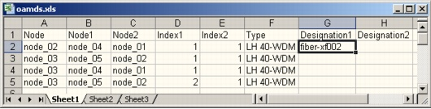

Importing and Exporting Data > Data File Formats > OADM Data Files
OADM Data Files
OADM data files use the format shown in Figure 5-9. The first row contains eight headers; each subsequent line corresponds to one OADM.
Note—You can import OADMs only if the network is in transparent mode.
Figure 5-9 OADM Data File in .csv Format

| Home © 1987-2007 OPNET Technologies, Inc. All Rights Reserved. This software may be covered by one or more U.S. Patents. See complete patent notice in the Legal Notices section. OPNET Support Center |